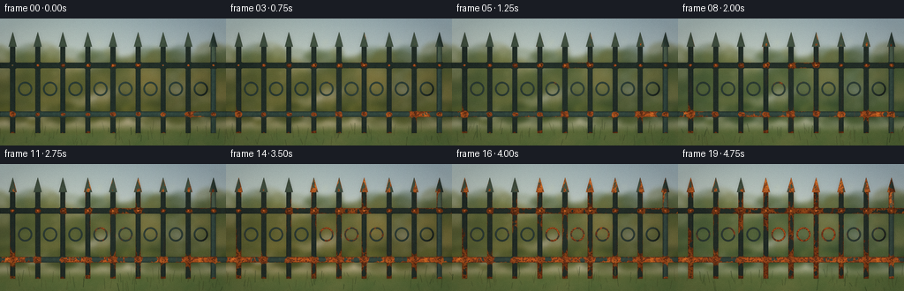
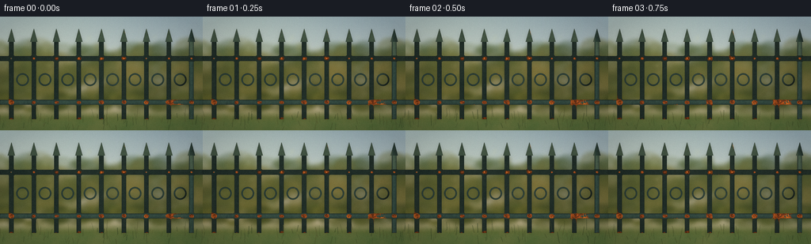
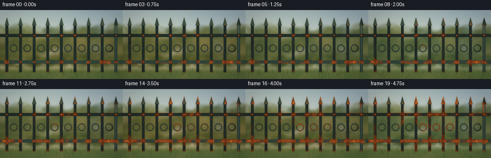
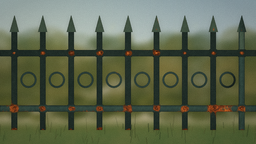
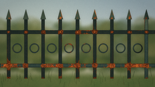
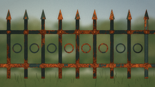
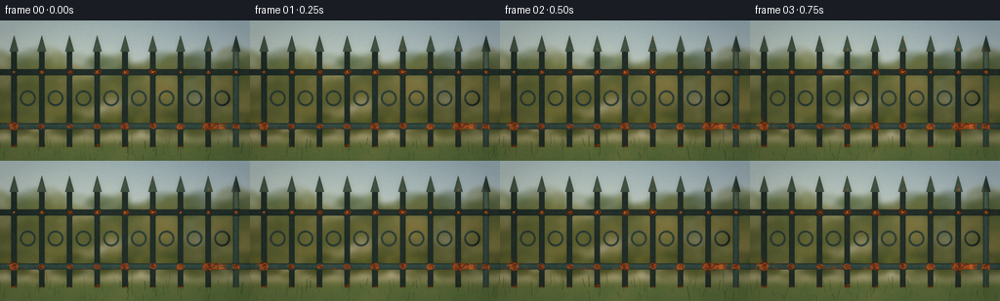

CODING AGENTS AS PIXEL WORLD MODELS
traex/DeepSeek-V4.1-Flash · material_0044
点击播放 · 原生 RGB 像素
逐轮保存的候选
回放视频、检查图与代码变化。
每份候选均可单独播放。实际图片检查记录在下方工具轨迹中。
候选 01播放与检查图
点击播放 · 原生 RGB 像素

展开代码变化
--- 上一保存版本
+++ 本次保存版本
@@ -0,0 +1,484 @@
+"""Procedural timelapse of a painted metal fence rusting outdoors."""
+
+from pathlib import Path
+
+import numpy as np
+from PIL import Image, ImageDraw, ImageFilter
+from scipy.ndimage import binary_erosion, distance_transform_edt, gaussian_filter
+
+import artifact_io
+
+
+OUT_W, OUT_H = 256, 144
+SS = 3
+W, H = OUT_W * SS, OUT_H * SS
+CASE_DIR = Path(__file__).resolve().parent
+
+
+def norm01(array):
+ lo, hi = np.percentile(array, (1.0, 99.0))
+ return np.clip((array - lo) / max(hi - lo, 1e-6), 0.0, 1.0)
+
+
+def smoothstep(edge0, edge1, value):
+ t = np.clip((value - edge0) / max(edge1 - edge0, 1e-6), 0.0, 1.0)
+ return t * t * (3.0 - 2.0 * t)
+
+
+def mix_color(a, b, amount):
+ amount = np.asarray(amount, dtype=np.float32)
+ if amount.ndim == 2:
+ amount = amount[..., None]
+ return a + (b - a) * amount
+
+
+def make_mask(draw_callback):
+ image = Image.new("L", (W, H), 0)
+ draw_callback(ImageDraw.Draw(image))
+ return np.asarray(image) > 0
+
+
+def make_background(seed):
+ rng = np.random.default_rng(seed)
+ yy = np.linspace(0.0, 1.0, H, dtype=np.float32)[:, None, None]
+ sky_top = np.array([151, 177, 190], dtype=np.float32)
+ sky_bottom = np.array([218, 211, 188], dtype=np.float32)
+ background = np.broadcast_to(
+ sky_top + (sky_bottom - sky_top) * yy, (H, W, 3)
+ ).copy()
+
+ image = Image.fromarray(np.clip(background, 0, 255).astype(np.uint8))
+ draw = ImageDraw.Draw(image, "RGBA")
+
+ # Distant tree canopy and hedge, deliberately soft to keep the fence sharp.
+ for _ in range(190):
+ cx = int(rng.uniform(-40, W + 40))
+ cy = int(rng.uniform(110, 306))
+ radius = int(rng.uniform(22, 72))
+ color = tuple(int(v) for v in rng.choice(
+ [
+ (47, 72, 49),
+ (60, 85, 53),
+ (73, 94, 58),
+ (91, 103, 62),
+ (105, 111, 68),
+ ]
+ )) + (int(rng.uniform(70, 130)),)
+ draw.ellipse(
+ (cx - radius, cy - radius // 2, cx + radius, cy + radius),
+ fill=color,
+ )
+
+ # Low hedge closes the middle distance.
+ for _ in range(105):
+ cx = int(rng.uniform(-20, W + 20))
+ cy = int(rng.uniform(292, 355))
+ radius = int(rng.uniform(15, 42))
+ color = tuple(int(v) for v in rng.choice(
+ [(45, 70, 43), (57, 82, 47), (69, 91, 50), (84, 100, 54)]
+ )) + (int(rng.uniform(100, 170)),)
+ draw.ellipse(
+ (cx - radius, cy - radius // 2, cx + radius, cy + radius // 2),
+ fill=color,
+ )
+
+ # A few out-of-focus highlights in the foliage.
+ for _ in range(34):
+ cx = int(rng.uniform(0, W))
+ cy = int(rng.uniform(70, 300))
+ radius = int(rng.uniform(2, 9))
+ draw.ellipse(
+ (cx - radius, cy - radius, cx + radius, cy + radius),
+ fill=(210, 211, 153, int(rng.uniform(20, 55))),
+ )
+
+ image = image.filter(ImageFilter.GaussianBlur(7.0))
+ background = np.asarray(image, dtype=np.float32)
+
+ # Lawn with uneven dry patches.
+ grass_noise = norm01(gaussian_filter(rng.normal(size=(H, W)), 18.0))
+ grass_noise2 = norm01(gaussian_filter(rng.normal(size=(H, W)), 4.0))
+ y = np.arange(H, dtype=np.float32)[:, None]
+ ground_amount = smoothstep(330.0, 390.0, y)
+ grass_a = np.array([79, 104, 57], dtype=np.float32)
+ grass_b = np.array([114, 119, 69], dtype=np.float32)
+ grass = grass_a + (grass_b - grass_a) * (0.42 * grass_noise + 0.18 * grass_noise2)[..., None]
+ background = mix_color(background, grass, ground_amount)
+
+ # Soft light spill from the upper left.
+ gy, gx = np.mgrid[0:H, 0:W]
+ sun = np.exp(-(((gx - W * 0.18) / (W * 0.55)) ** 2
+ + ((gy - H * 0.04) / (H * 0.65)) ** 2))
+ background += sun[..., None] * np.array([24, 20, 7], dtype=np.float32)
+ return np.clip(background, 0, 255)
+
+
+def build_geometry():
+ centers = np.linspace(43, W - 43, 9)
+ half_picket = 8.2
+ top_y, bottom_y = 91, 389
+ top_rail, bottom_rail = 159, 325
+ rail_half = 9.0
+ bay_centers = (centers[:-1] + centers[1:]) * 0.5
+ ring_y = 239.0
+ ring_radius = 24.0
+
+ rails = make_mask(lambda d: (
+ d.rectangle((0, top_rail - rail_half, W, top_rail + rail_half), fill=255),
+ d.rectangle((0, bottom_rail - rail_half, W, bottom_rail + rail_half), fill=255),
+ ))
+ rings = make_mask(lambda d: [
+ d.ellipse(
+ (cx - ring_radius, ring_y - ring_radius,
+ cx + ring_radius, ring_y + ring_radius),
+ outline=255, width=6,
+ )
+ for cx in bay_centers
+ ])
+ pickets = make_mask(lambda d: [
+ d.rectangle(
+ (cx - half_picket, top_y, cx + half_picket, bottom_y), fill=255
+ )
+ for cx in centers
+ ])
+ finials = make_mask(lambda d: [
+ d.polygon(
+ [(cx, 46), (cx - 13.5, top_y + 4), (cx + 13.5, top_y + 4)],
+ fill=255,
+ )
+ for cx in centers
+ ])
+ collars = make_mask(lambda d: [
+ d.rectangle((cx - 11, ry - 11, cx + 11, ry + 11), fill=255)
+ for cx in centers for ry in (top_rail, bottom_rail)
+ ])
+ bolts = make_mask(lambda d: [
+ d.ellipse((cx - 4.3, ry - 4.3, cx + 4.3, ry + 4.3), fill=255)
+ for cx in centers for ry in (top_rail, bottom_rail)
+ ])
+
+ label = np.zeros((H, W), dtype=np.uint8)
+ label[rails] = 3
+ label[rings] = 4
+ label[pickets] = 1
+ label[finials] = 2
+ label[collars] = 5
+ label[bolts] = 6
+ fence = label > 0
+
+ yy, xx = np.mgrid[0:H, 0:W]
+ shade = np.zeros((H, W), dtype=np.float32)
+ for cx in centers:
+ mask = label == 1
+ dx = xx - cx
+ cyl = np.sqrt(np.clip(1.0 - (dx / (half_picket + 1.2)) ** 2, 0, 1))
+ local = 0.69 + 0.40 * cyl
+ local += 0.09 * np.exp(-((dx + 2.5) / 1.9) ** 2)
+ shade = np.where(mask, local, shade)
+
+ for ry in (top_rail, bottom_rail):
+ mask = label == 3
+ dy = yy - ry
+ cyl = np.sqrt(np.clip(1.0 - (dy / (rail_half + 1.2)) ** 2, 0, 1))
+ local = 0.69 + 0.39 * cyl
+ local += 0.08 * np.exp(-((dy + 2.5) / 2.1) ** 2)
+ shade = np.where(mask, local, shade)
+
+ ring_shade = np.zeros((H, W), dtype=np.float32)
+ for cx in bay_centers:
+ dx = xx - cx
+ dy = yy - ring_y
+ radius = np.maximum(np.sqrt(dx * dx + dy * dy), 1.0)
+ nx, ny = dx / radius, dy / radius
+ local = np.clip(0.73 + 0.27 * (0.15 - 0.70 * nx - 0.52 * ny), 0.54, 1.15)
+ ring_shade = np.where(label == 4, local, ring_shade)
+ shade = np.where(label == 4, ring_shade, shade)
+
+ finial_shade = np.zeros((H, W), dtype=np.float32)
+ for cx in centers:
+ local = 0.77 + 0.24 * np.clip((cx + 10 - xx) / 20.0, 0, 1)
+ finial_shade = np.where(label == 2, local, finial_shade)
+ shade = np.where(label == 2, finial_shade, shade)
+
+ collar_shade = np.zeros((H, W), dtype=np.float32)
+ for cx in centers:
+ for ry in (top_rail, bottom_rail):
+ local = 0.67 + 0.34 * np.sqrt(np.clip(
+ 1.0 - ((yy - ry) / 12.0) ** 2, 0, 1
+ ))
+ collar_mask = (label == 5) & (np.abs(xx - cx) < 12)
+ collar_shade = np.where(collar_mask, local, collar_shade)
+ shade = np.where(label == 5, collar_shade, shade)
+
+ bolt_shade = np.zeros((H, W), dtype=np.float32)
+ for cx in centers:
+ for ry in (top_rail, bottom_rail):
+ dx = (xx - cx) / 4.3
+ dy = (yy - ry) / 4.3
+ dome = np.sqrt(np.clip(1.0 - dx * dx - dy * dy, 0, 1))
+ local = 0.72 + 0.32 * dome - 0.11 * (dx + dy) * 0.5
+ bolt_mask = (label == 6) & (np.abs(xx - cx) <= 4.4) & (np.abs(yy - ry) <= 4.4)
+ bolt_shade = np.where(bolt_mask, local, bolt_shade)
+ shade = np.where(label == 6, bolt_shade, shade)
+
+ inner_distance = distance_transform_edt(fence)
+ edge = np.exp(-inner_distance / 3.0).astype(np.float32)
+ eroded = binary_erosion(fence, iterations=1)
+ hard_edge = (fence & ~eroded).astype(np.float32)
+ shade = np.where(fence, np.clip(shade, 0.48, 1.18), shade)
+
+ return {
+ "centers": centers,
+ "bay_centers": bay_centers,
+ "top_rail": top_rail,
+ "bottom_rail": bottom_rail,
+ "bottom_y": bottom_y,
+ "label": label,
+ "fence": fence,
+ "shade": shade,
+ "edge": edge,
+ "hard_edge": hard_edge,
+ }
+
+
+def build_material_fields(geometry, seed):
+ rng = np.random.default_rng(seed)
+ yy, xx = np.mgrid[0:H, 0:W]
+
+ broad = norm01(gaussian_filter(rng.normal(size=(H, W)), 28.0))
+ medium = norm01(gaussian_filter(rng.normal(size=(H, W)), 9.0))
+ fine = norm01(gaussian_filter(rng.normal(size=(H, W)), 2.2))
+ ultra = norm01(rng.normal(size=(H, W)))
+ streaks = norm01(gaussian_filter(rng.normal(size=(H, W)), sigma=(24.0, 2.4)))
+
+ hotspot = np.zeros((H, W), dtype=np.float32)
+ for cx in geometry["centers"]:
+ for ry in (geometry["top_rail"], geometry["bottom_rail"]):
+ hotspot += 1.05 * np.exp(
+ -(((xx - cx) / 11.0) ** 2 + ((yy - ry) / 8.0) ** 2)
+ )
+ hotspot += 0.78 * np.exp(
+ -(((xx - cx) / 8.5) ** 2 + ((yy - geometry["bottom_y"]) / 8.0) ** 2)
+ )
+ hotspot += 0.45 * np.exp(
+ -(((xx - cx) / 6.0) ** 2 + ((yy - 89.0) / 8.0) ** 2)
+ )
+ for cx in geometry["bay_centers"]:
+ hotspot += 0.24 * np.exp(
+ -(((xx - cx) / 9.0) ** 2 + ((yy - 239.0) / 9.0) ** 2)
+ )
+ hotspot += 0.32 * np.exp(-((yy - geometry["bottom_rail"]) / 27.0) ** 2)
+ hotspot = np.clip(hotspot, 0.0, 1.55)
+
+ score = (
+ 0.42 * broad
+ + 0.20 * medium
+ + 0.11 * fine
+ + 0.20 * geometry["edge"]
+ + 0.57 * hotspot
+ + 0.13 * streaks
+ )
+ score = norm01(score)
+ chip_score = norm01(
+ 0.40 * broad
+ + 0.20 * medium
+ + 0.12 * ultra
+ + 0.25 * geometry["edge"]
+ + 0.16 * streaks
+ + 0.10 * hotspot
+ )
+ return {
+ "broad": broad,
+ "medium": medium,
+ "fine": fine,
+ "ultra": ultra,
+ "streaks": streaks,
+ "hotspot": hotspot,
+ "score": score,
+ "chip_score": chip_score,
+ }
+
+
+def tint_background(background, frame_index):
+ t = frame_index / 19.0
+ # The garden moves through a restrained seasonal cycle across the years.
+ warmth = 0.45 + 0.55 * np.sin(2.0 * np.pi * (1.55 * t + 0.13))
+ warmth = float(np.clip(warmth, 0.0, 1.0))
+ yy = np.arange(H, dtype=np.float32)[:, None]
+ foliage_band = smoothstep(105.0, 205.0, yy) * (1.0 - smoothstep(350.0, 410.0, yy))
+ tinted = background.copy()
+ tinted[..., 0] += 12.0 * warmth * foliage_band
+ tinted[..., 1] -= 3.0 * warmth * foliage_band
+ tinted[..., 2] -= 10.0 * warmth * foliage_band
+ return np.clip(tinted, 0, 255)
+
+
+def add_grass_blades(image, frame_index):
+ rng = np.random.default_rng(9100 + frame_index)
+ overlay = Image.new("RGBA", (W, H), (0, 0, 0, 0))
+ draw = ImageDraw.Draw(overlay)
+ for _ in range(58):
+ x = rng.uniform(0, W)
+ base_y = rng.uniform(378, H + 4)
+ length = rng.uniform(12, 42)
+ lean = rng.uniform(-8, 8)
+ color = tuple(int(v) for v in rng.choice(
+ [(44, 67, 37), (61, 82, 43), (78, 94, 47), (101, 107, 57)]
+ )) + (int(rng.uniform(95, 175)),)
+ draw.line(
+ (x, base_y, x + lean, base_y - length),
+ fill=color,
+ width=int(rng.choice([1, 1, 2])),
+ )
+ overlay = overlay.filter(ImageFilter.GaussianBlur(0.55))
+ return Image.alpha_composite(image.convert("RGBA"), overlay).convert("RGB")
+
+
+def render_frame(frame_index, background, geometry, fields):
+ t = frame_index / 19.0
+ age = t ** 0.92
+ fence = geometry["fence"]
+ label = geometry["label"]
+ edge = geometry["edge"]
+ broad = fields["broad"]
+ medium = fields["medium"]
+ fine = fields["fine"]
+ ultra = fields["ultra"]
+ streaks = fields["streaks"]
+ hotspot = fields["hotspot"]
+
+ image = tint_background(background, frame_index)
+
+ # Slight contact shadow and soft bloom just beyond the fence silhouette.
+ silhouette = gaussian_filter(fence.astype(np.float32), 7.0)
+ image *= (1.0 - 0.12 * np.clip(silhouette - fence, 0.0, 1.0))[..., None]
+
+ paint_a = np.array([39, 61, 52], dtype=np.float32)
+ paint_b = np.array([54, 76, 62], dtype=np.float32)
+ paint_variation = 0.46 * broad + 0.28 * medium + 0.12 * fine
+ paint = paint_a + (paint_b - paint_a) * paint_variation[..., None]
+ paint *= (0.96 + 0.08 * fine)[..., None]
+
+ # Paint chalks and loses saturation slowly under sun and rain.
+ chalk = np.array([79, 82, 67], dtype=np.float32)
+ paint = mix_color(paint, chalk, 0.10 * age + 0.035 * broad)
+ paint *= 1.0 - 0.055 * age
+
+ chip_threshold = 0.91 - 0.47 * age
+ chip = smoothstep(
+ chip_threshold - 0.030, chip_threshold + 0.030, fields["chip_score"]
+ )
+ chip *= fence
+ primer = np.array([104, 103, 88], dtype=np.float32)
+ exposed = np.array([52, 48, 42], dtype=np.float32)
+ primer_field = (0.75 + 0.28 * medium + 0.08 * fine)[..., None]
+ exposed_field = (0.78 + 0.25 * fine)[..., None]
+ paint = mix_color(paint, primer * primer_field, 0.85 * chip)
+ paint = mix_color(paint, exposed * exposed_field, 0.35 * chip)
+
+ rust_threshold = 0.835 - 0.455 * age
+ corrosion = smoothstep(
+ rust_threshold - 0.038, rust_threshold + 0.038, fields["score"]
+ )
+ corrosion = np.maximum(
+ corrosion,
+ 0.68 * smoothstep(0.69 - 0.38 * age, 0.78 - 0.33 * age, fields["score"])
+ * smoothstep(0.14, 0.42, hotspot),
+ )
+ corrosion *= fence
+ corrosion = np.maximum(corrosion, chip * smoothstep(0.35, 0.78, fields["score"]))
+
+ rust_dark = np.array([78, 41, 26], dtype=np.float32)
+ rust_mid = np.array([151, 73, 31], dtype=np.float32)
+ rust_orange = np.array([198, 92, 32], dtype=np.float32)
+ rust_bright = np.array([220, 124, 48], dtype=np.float32)
+ rust_tone = np.clip(0.58 * medium + 0.31 * fine + 0.11 * broad, 0, 1)
+ rust = mix_color(rust_dark, rust_mid, rust_tone)
+ rust = mix_color(rust, rust_orange, 0.52 * fine + 0.18 * broad)
+ rust = mix_color(rust, rust_bright, 0.35 * smoothstep(0.56, 0.95, medium))
+ rust *= (0.76 + 0.43 * fine + 0.12 * ultra)[..., None]
+
+ # Dark pitting and bright granular flecks break up the oxide surface.
+ pits = (fine > 0.63) & (corrosion > 0.20)
+ flakes = (ultra > 0.80) & (corrosion > 0.38)
+ rust = mix_color(rust, np.array([53, 31, 24], dtype=np.float32), pits * 0.68)
+ rust = mix_color(rust, np.array([236, 154, 76], dtype=np.float32), flakes * 0.34)
+
+ # Rust water stains run down from joints even where the paint is intact.
+ stain = smoothstep(0.59, 0.88, streaks) * smoothstep(0.03, 0.35, age)
+ stain *= smoothstep(145.0, 190.0, np.arange(H, dtype=np.float32)[:, None])
+ stain *= (0.35 + 0.65 * smoothstep(0.0, 0.9, hotspot))
+ stain *= fence * (1.0 - 0.55 * corrosion)
+ stain_color = np.array([101, 65, 39], dtype=np.float32)
+ paint = mix_color(paint, stain_color, 0.48 * stain)
+
+ # Chipped paint gets a dark lip and a narrow oxidized rim.
+ halo = smoothstep(
+ chip_threshold - 0.10, chip_threshold, fields["chip_score"]
+ ) * (1.0 - chip) * fence
+ paint *= (1.0 - 0.20 * halo)[..., None]
+
+ material = paint.copy()
+ material = mix_color(material, rust, corrosion)
+
+ # Edge grime, bottom dampness, and a dark inset at every hard silhouette.
+ grime = (0.10 + 0.20 * age) * edge
+ grime += 0.13 * smoothstep(335.0, 390.0, np.arange(H, dtype=np.float32)[:, None])
+ material *= (1.0 - 0.23 * np.clip(grime, 0, 1))[..., None]
+ material *= (1.0 - 0.22 * geometry["hard_edge"])[..., None]
+
+ # Fine rust relief catches the upper-left light.
+ gy, gx = np.gradient(0.52 * medium + 0.48 * fine)
+ relief = np.clip(1.0 - 0.34 * gx - 0.24 * gy, 0.68, 1.32)
+ material *= (geometry["shade"] * relief)[..., None]
+
+ # Cool reflected skylight on painted surfaces, warm bounce in the oxide.
+ paint_mask = fence & (corrosion < 0.35)
+ material[..., 2] += 4.0 * paint_mask * geometry["shade"]
+ material[..., 0] += 5.0 * corrosion * geometry["shade"]
+
+ image[fence] = material[fence]
+
+ # A thin sunlit rim on finials and rail tops keeps the silhouette readable.
+ top_glint = (
+ fence
+ & (np.arange(H, dtype=np.float32)[:, None] < geometry["top_rail"] + 3)
+ & (geometry["shade"] > 0.98)
+ )
+ image[top_glint] += np.array([18, 16, 8], dtype=np.float32)
+
+ frame = Image.fromarray(np.clip(image, 0, 255).astype(np.uint8))
+ frame = add_grass_blades(frame, frame_index)
+ frame = frame.resize((OUT_W, OUT_H), Image.Resampling.LANCZOS)
+ frame_array = np.asarray(frame, dtype=np.float32)
+
+ # Gentle vignette, warm highlights, and a touch of per-frame film grain.
+ yy, xx = np.mgrid[0:OUT_H, 0:OUT_W]
+ nx = (xx - OUT_W / 2) / (OUT_W / 2)
+ ny = (yy - OUT_H / 2) / (OUT_H / 2)
+ vignette = 1.0 - 0.18 * np.clip((nx * nx + ny * ny) * 0.62, 0, 1)
+ frame_array *= vignette[..., None]
+ frame_array[..., 0] += 2.0 + 1.5 * (frame_index / 19.0)
+ frame_array[..., 2] -= 1.2
+
+ grain_rng = np.random.default_rng(1200 + frame_index)
+ grain = grain_rng.normal(0.0, 1.05, size=(OUT_H, OUT_W, 1))
+ frame_array += grain
+ return np.clip(frame_array, 0, 255).astype(np.uint8)
+
+
+def main():
+ background = make_background(1781)
+ geometry = build_geometry()
+ fields = build_material_fields(geometry, 6419)
+ frames = [
+ render_frame(i, background, geometry, fields)
+ for i in range(20)
+ ]
+ frames = np.stack(frames)
+ artifact_io.save(frames, CASE_DIR)
+ print("Saved 20 frames to", CASE_DIR)
+
+
+if __name__ == "__main__":
+ main()
候选 02播放与检查图
点击播放 · 原生 RGB 像素


展开代码变化
--- 上一保存版本
+++ 本次保存版本
@@ -364,7 +364,7 @@
paint = mix_color(paint, chalk, 0.10 * age + 0.035 * broad)
paint *= 1.0 - 0.055 * age
- chip_threshold = 0.91 - 0.47 * age
+ chip_threshold = 0.955 - 0.465 * age
chip = smoothstep(
chip_threshold - 0.030, chip_threshold + 0.030, fields["chip_score"]
)
@@ -376,22 +376,22 @@
paint = mix_color(paint, primer * primer_field, 0.85 * chip)
paint = mix_color(paint, exposed * exposed_field, 0.35 * chip)
- rust_threshold = 0.835 - 0.455 * age
+ rust_threshold = 0.925 - 0.585 * age
corrosion = smoothstep(
rust_threshold - 0.038, rust_threshold + 0.038, fields["score"]
)
corrosion = np.maximum(
corrosion,
- 0.68 * smoothstep(0.69 - 0.38 * age, 0.78 - 0.33 * age, fields["score"])
- * smoothstep(0.14, 0.42, hotspot),
+ 0.64 * smoothstep(0.90 - 0.56 * age, 0.98 - 0.54 * age, fields["score"])
+ * smoothstep(0.20, 0.48, hotspot),
)
corrosion *= fence
corrosion = np.maximum(corrosion, chip * smoothstep(0.35, 0.78, fields["score"]))
rust_dark = np.array([78, 41, 26], dtype=np.float32)
- rust_mid = np.array([151, 73, 31], dtype=np.float32)
- rust_orange = np.array([198, 92, 32], dtype=np.float32)
- rust_bright = np.array([220, 124, 48], dtype=np.float32)
+ rust_mid = np.array([164, 79, 30], dtype=np.float32)
+ rust_orange = np.array([215, 102, 32], dtype=np.float32)
+ rust_bright = np.array([231, 135, 51], dtype=np.float32)
rust_tone = np.clip(0.58 * medium + 0.31 * fine + 0.11 * broad, 0, 1)
rust = mix_color(rust_dark, rust_mid, rust_tone)
rust = mix_color(rust, rust_orange, 0.52 * fine + 0.18 * broad)
@@ -405,7 +405,7 @@
rust = mix_color(rust, np.array([236, 154, 76], dtype=np.float32), flakes * 0.34)
# Rust water stains run down from joints even where the paint is intact.
- stain = smoothstep(0.59, 0.88, streaks) * smoothstep(0.03, 0.35, age)
+ stain = smoothstep(0.73, 0.96, streaks) * smoothstep(0.14, 0.52, age)
stain *= smoothstep(145.0, 190.0, np.arange(H, dtype=np.float32)[:, None])
stain *= (0.35 + 0.65 * smoothstep(0.0, 0.9, hotspot))
stain *= fence * (1.0 - 0.55 * corrosion)
可观测工具轨迹
实际执行的命令与返回图片。
命令 1exit 0
/bin/bash -c "pwd && rg --files -g '"'!*.mp4'"' -g '"'!*.mov'"' | sed -n '1,160p'"
命令 2exit 0
/bin/bash -c "sed -n '1,240p' prompt.txt"
命令 3exit 0
/bin/bash -c "sed -n '1,280p' GENERATION_RULES.md"
命令 4exit 0
/bin/bash -c 'cat task_spec.json'
命令 5exit 0
/bin/bash -c "ls -la && find . -maxdepth 2 -type f -printf '%p %s bytes\\n' | sort"
命令 6exit 0
/bin/bash -c "sed -n '1,260p' artifact_io.py"
命令 7exit 0
/bin/bash -c "python - <<'PY'
import numpy, PIL
print('numpy', numpy.__version__)
print('PIL', PIL.__version__)
try:
import scipy
print('scipy', scipy.__version__)
except Exception as e: print('no scipy', e)
try:
import cv2
print('cv2', cv2.__version__)
except Exception as e: print('no cv2', e)
PY"命令 8exit 0
/bin/bash -c 'which ffmpeg || true; which ffprobe || true'
命令 9exit 0
/bin/bash -c "sed -n '1,240p' player_template.html"
命令 10exit 1
/bin/bash -c 'python generate.py'
命令 11exit 0
/bin/bash -c 'python generate.py'
命令 12exit 0
/bin/bash -c "python - <<'PY'
import generate, numpy as np
g=generate.build_geometry(); f=generate.build_material_fields(g,6419)
for key in ('score','chip_score'):
a=f[key][g['fence']]
print(key, np.percentile(a,[1,5,10,20,30,40,50,60,70,80,90,95,99]))
for i in [0,1,3,5,8,10,13,16,19]:
age=(i/19)**.92
th=.835-.455*age
frac=(f['score'][g['fence']]>th).mean()
print(i, round(age,3), round(th,3), round(frac,3))
PY"命令 13exit 0
/bin/bash -c "python - <<'PY'
from PIL import Image
import numpy as np
for i in [0,5,10,15,19]:
a=np.asarray(Image.open(f'frames/{i:02d}.png')).astype(float)
print(i, a.mean((0,1)).round(1), 'range', a.min(),a.max())
PY"命令 14exit 0
/bin/bash -c 'python generate.py'
视觉工具实际返回图片 1

视觉工具实际返回图片 2

视觉工具实际返回图片 3

视觉工具实际返回图片 4

视觉工具实际返回图片 5

视觉工具实际返回图片 6

保存候选 2 份；完成命令 14 次；可验证图片返回 6 张。原始 API 响应与完整日志保留在本地。